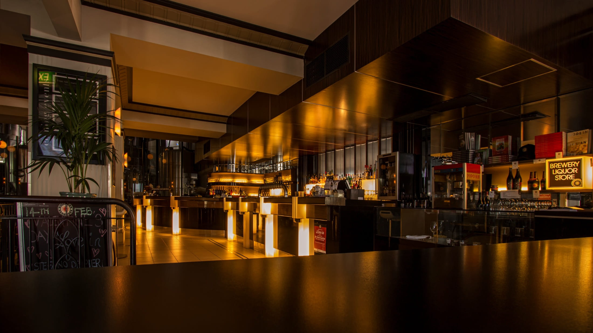
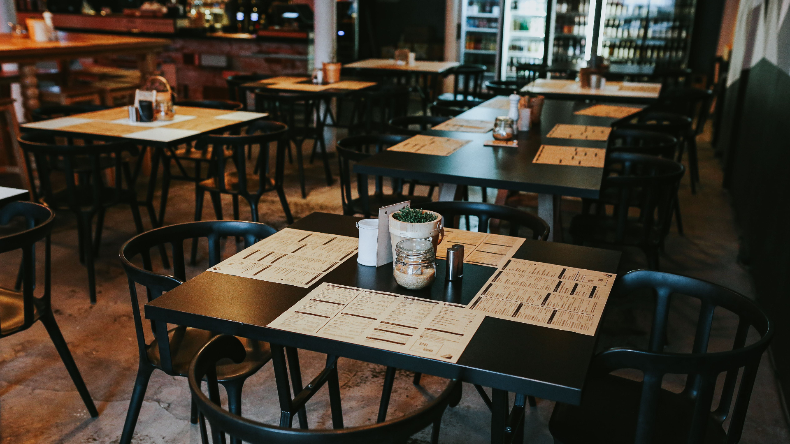
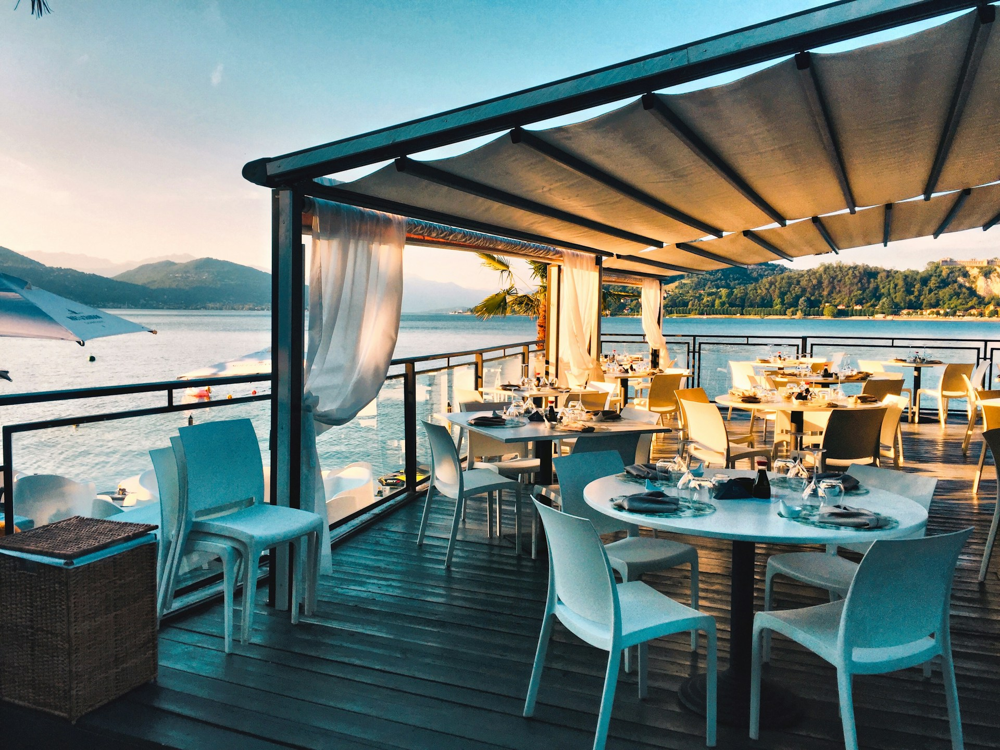

Bienvenidos a Tacomoloco Express! Sumérgete en una experiencia gastronómica que despierta tus sentidos y te hace perder la cabeza por sus deliciosos sabores.
En nuestro restaurante de comida rápida, fusionamos lo mejor de la cocina tradicional con la innovación y la frescura de los ingredientes modernos.
Tacomoloco Express es el lugar perfecto para disfrutar de una comida rápida de calidad con amigos y familiares.
¡descubre sabores que te vuelven loco en cada bocado!
Nuestros productos
Nuestros restaurantes
Sucursal Escazu

Sucursal barrio escalante

Sucursal Puntarenas centro

Sucursal Liberia